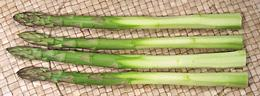
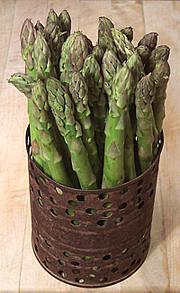
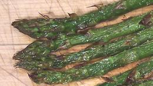

SAFARI
Users
Buying & Storing Asparagus
Select
asparagus of a size appropriate to the recipe you will use (or select a recipe appropriate to the size asparagus you can get). For green asparagus the common sizes are "thick" (about 0.70 inch thick) and "pencil thin" (about 0.40 inch thick). The "pencil thin" size has a more intense flavor but is also more fibrous and cannot be peeled. In California we also have "Wire Thin" (about 0.25 inch thick). All measures are at the thick end.Buying:
Purchase as close to need as possible to avoid flavor loss. Usually you chose to cook Asparagus when you find it very fresh and at a price you can afford.- The stalks should be fresh, plump and without any wrinkling which comes from dehydration. Shriveled asparagus becomes bitter and off-flavor and cannot be recovered. Discard any like that.
- Thicker asparagus tips should be tight and smooth with little or no evidence of "ferning out". Very thin asparagus commonly has started to fern out and this is OK if it's not gone too far.
- Look out for tip rot - the tip points become dark and soft. Asparagus like this can be used by cutting off the mushy part, but that's usually the best part and it's a sign of long storage and serious flavor loss.
- Look for bundles of uniform size so they will all cook the same.
- White asparagus: watch out for stalks that have started to shrivel and mold at the base end.
Storing:
When you have the asparagus home immediately remove any rubber bands, cut off the bottom 1/4 inch and stand the spears in a bowl with an inch of water in it. Let them refresh for at least an hour. Then put them in a plastic bag longer than the spears by at least an inch but open at the top to avoid tip rot. Refrigerated, really fresh spears will keep for up to a week but they steadily lose flavor so should be used as soon as possible.Serving Notes
- Asparagus is notorious for making wine taste bad - and deservedly so. To eliminate this effect dress the asparagus with a little salt and lemon juice. My Lemon Butter Sauce #3 works fine for this, even if you're not having wine.
- Unpeeled asparagus served full length (any size) is going to be fibrous enough to be a problem - and cooking longer just makes this problem a whole lot worse. Either cut it to convenient lengths or make sure diners have something to cut it with - and don't overcook, it should still have a faint crunch.
Cooking Asparagus
The big problem with cooking asparagus is the spears are not uniform from end to end. The tender tips cook quickly while the rest of the spear needs more time the farther down you go.
General Prep
IF you will not be peeling the asparagus, snap the tough base end off at the lowest point where it'll actually snap cleanly.
Peeling:
Cut the tough base off right at the point where it starts to turn purple, then white. That should be at least an inch below the snap point. Use a sharp vegetable peeler and start at about half way down the spear and peel right off the base end. You definitely lose diameter by peeling, but you partially make up for it by being able to use at least another inch at the bottom.White asparagus needs to be cut at about the snap point because it's very fibrous at the base. You also need to peel it from relatively high up the stem.
Note: asparagus ends and peelings are often simmered in water
to extract their flavor. The water is then used to make asparagus soup or
for some similar use.
Asparagus Steamer Method | |
|  |
This method is for unpeeled asparagus and works best with fairly thin
spears but is OK for moderately thick ones. Yes, I know, my asparagus
steamer is not "gourmet", but it holds a satisfying 1-3/4 pounds of
spears - about what you'd get snapping 2 pounds, and works just fine.
I made it from a tomato can by punching a lot of holes in it using a
hole punch. You can get shiny expensive ones, even ones with their own
special pot, from any gourmet outlet.
|
Cooking Peeled Asparagus
Use a sufficiently large sauté pan. Bring plenty of water to a rolling boil. Drop the spears in, cover and bring back to a boil as quickly as possible. Keep the water at a gentle boil for 6 to 7 minutes depending on thickness. Test a spear for doneness. Remove the spears with tongs or a strainer ladle.
White asparagus needs a little more time, 7 to 8 minutes for "Standard" size, more for larger.
You can also steam peeled asparagus instead of boiling it. Generally this will be in a wok with a steamer grid and tight cover because most vegetable steamers are nowhere near large enough for full length asparagus. For moderately thick asparagus steam covered for 9 to 10 minutes.
Cooking Unpeeled Asparagus
"Pencil Thin" Asparagus: Snap off tough bottoms and use the same method as for Peeled Asparagus above, cooking for 3-1/2 to 4-1/2 minutes depending on thickness. "Wire Thin" is done in 3 to 4 minutes. The spears will be a bit fibrous, nothing you can do about that but overcooking makes it worse. If you steam instead of boil the time should be 7-1/2 to 8-1/2 minutes for pencil thin.
Thick Asparagus: After snapping, cut the spears in thirds keeping the different sections separate. Bring plenty of salted water to a rolling boil in a pot or sauté pan. First put in the base ends and let boil for 1-1/2 minute. Then put in the midsections and boil for 1 minute. Finally put in the tip ends and boil until tender. Total time is 7 to 8 minutes depending on thickness.
You can also steam unpeeled asparagus instead of boiling it. Steam the bottom end segments for 2-1/2 minutes, then add the middle segments and steam for 2 minutes. Finally add the tips. Total steaming time should be 10 to 11 minutes depending on thickness.
Grilling & Broiling Asparagus | |
|
 |
Here is a place you will want rather thin asparagus so it's reasonably uniform from end to end and sturdy enough to take the handling.
|